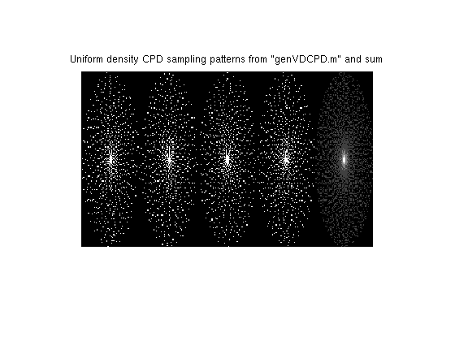
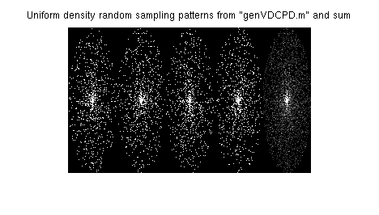
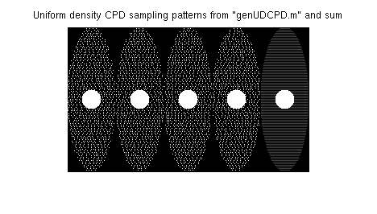
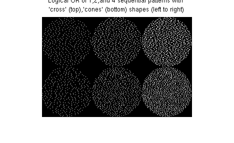

Complementary Poisson-Disc Sampling
(c) Evan G. Levine (egl@stanford.edu) 2014.
Download the demos and sampling functions
Contents
References
1) EG Levine, M Saranathan, and B Hargreaves. “Complementary Poisson-Disc Sampling” Proceedings of ISMRM, Milan, Italy, May 2014
2) EG Levine, B Quist, B Daniel, B Hargreaves, and M Saranathan. “View-sharing and Compressed Sensing in Two-Point Dixon-based DCE-MRI” Proceedings of ISMRM, Milan, Italy, May 2014
3) EG Levine, B Hargreaves, B Daniel, S Vasanawala, and M Saranathan. "3D Cartesian MRI with Compressed Sensing and Variable View Sharing Using Complementary Poisson-disc Sampling" Magnic Resonance in Medicine 2016
Setup
For Examples 1-3, uniform density sampling patterns will contain a fully-sampled central region and annular region with 2x1 regular under-sampling.
clear, close all; cd('src'); makeMex; cd('..'); addpath('utils/'); addpath('src/'); FOVRatio = 0.4; % FOVz / FOVy nt = 4; % # temporal phases ny = 180; % y-dimension nz = 60; % z-dimension % create a fully-sampled central region Areg = zpad(removeCorners(ones(24,24)), [ny nz]); % Annular region with 2x1 regular under-sampling F = removeCorners(ones(ny, nz) - Areg); F(1:2:end,:) = 0;
Example 1: Variable density CPD sampling by region-wise UD-CPD
Ry = sqrt(ny*nz / sum(sum(F/nt))); Rz = Ry; R = [Ry Rz]; % Ry = Rz shapeOpt = 'cross'; % Union of a line along k = 0 and an ellipse at t = 0 distRelaxationOpt = 'k'; % Only relax k-space min. distance constraint vd_exp = 1; % 1/kr^1 density Rmax = 22; % reduction factor at kr = kmax tic; M1 = genVDCPD(nt,Rmax,vd_exp,FOVRatio,F,shapeOpt,0,1); toc; figure(1); imshow( [reshape(M1, [ny nz*nt]), sum(M1,3)/nt]); title('Uniform density CPD sampling patterns from "genVDCPD.m" and sum');
Elapsed time is 5.063664 seconds.
Example 2: Variable density random sampling by region-wise UD random
Ry = sqrt(ny*nz / sum(sum(F/nt))); Rz = Ry; R = [Ry Rz]; % Ry = Rz shapeOpt = 'cross'; % Union of a line along k = 0 and an ellipse at t = 0 distRelaxationOpt = 'k'; % Only relax k-space min. distance constraint vd_exp = 1; % 1/kr^1 density Rmax = 22; % reduction factor at kr = kmax tic; M1r = genVDCPD(nt,Rmax,vd_exp,FOVRatio,F,shapeOpt,0,1,0); toc; figure(2); imshow( [reshape(M1r, [ny nz*nt]), sum(M1r,3)/nt]); title('Uniform density random sampling patterns from "genVDCPD.m" and sum');
Elapsed time is 0.116374 seconds.
Example 3: Efficient uniform density CPD implementation
Uniform density sampling is efficiently implemented with a random queue and requires little tuning.
tic;
C = 0.5;
M2 = genUDCPD(nt,FOVRatio,F,shapeOpt) + repmat(Areg, [1 1 nt]);
toc;
figure(3);
imshow( [reshape(M2, [ny nz*nt]), sum(M2,3)/nt]);
title('Uniform density CPD sampling patterns from "genUDCPD.m" and sum');
------------- Uniform density CPD ------------- FOVz/FOVy = 0.40, Dims: 180 60 4 Min. distance criterion: cross Max total samples = 4002 Max # samples per phase: 1001 1001 1000 1000 ----------------------------------------------- It: 1, # Samples: 3503, ky min. dist.: 2.2 rand Q empty, breaking... It: 2, # Samples: 3503, ky min. dist.: 2.0 It: 3, # Samples: 3988, ky min. dist.: 1.8 It: 4, # Samples: 3988, ky min. dist.: 1.6 It: 5, # Samples: 3988, ky min. dist.: 1.5 It: 6, # Samples: 3988, ky min. dist.: 1.3 It: 7, # Samples: 3988, ky min. dist.: 1.2 It: 8, # Samples: 3988, ky min. dist.: 1.1 It: 9, # Samples: 4002, ky min. dist.: 1.0 Elapsed time is 0.169250 seconds.
Example 4: Use of min. distance criterion for temporal phase combination
Combining multiple phases should preserve the uniformity and incoherence of the Poisson-disc sample distribution. Here different min. distance criteria are compared. The 'cross' parameter generates an ellipse in k-space around any sample drawn and a line through the ellipse along the time axis, fixed at the sample k-space. Subsequent samples are drawn from the region of k-t space outside of the ellipse and line. Parameters 'ellipsoid', 'l1 ball', and 'cones' correspond to other shapes that better preserve the sampling properties after combining temporal phases, as shown in this example.
figure(4); nt = 20; F = removeCorners(ones(100,100)); M3= genUDCPD(nt,FOVRatio,F,'cross'); %+ repmat(Areg, [1 1 nt]); M6= genUDCPD(nt,FOVRatio,F,'cones'); % + repmat(Areg, [1 1 nt]); nVS = 4; % View-share this many phases imshow( [M3(:,:,1), sum(M3(:,:,1:2),3), sum(M3(:,:,1:4),3); M6(:,:,1) sum(M6(:,:,1:2),3), sum(M6(:,:,1:4),3)]); title({'Logical OR of 1,2,and 4 sequential patterns with ', '''cross'' (top),''cones'' (bottom) shapes (left to right)'});
------------- Uniform density CPD ------------- FOVz/FOVy = 0.40, Dims: 100 100 20 Min. distance criterion: cross Max total samples = 7825 Max # samples per phase: 392 392 392 392 392 391 391 391 391 391 391 391 391 391 391 391 391 391 391 391 ----------------------------------------------- It: 1, # Samples: 7110, ky min. dist.: 3.6 rand Q empty, breaking... It: 2, # Samples: 7110, ky min. dist.: 3.2 It: 3, # Samples: 7774, ky min. dist.: 2.9 It: 4, # Samples: 7797, ky min. dist.: 2.6 It: 5, # Samples: 7797, ky min. dist.: 2.3 It: 6, # Samples: 7821, ky min. dist.: 2.1 It: 7, # Samples: 7823, ky min. dist.: 1.9 It: 8, # Samples: 7823, ky min. dist.: 1.7 It: 9, # Samples: 7823, ky min. dist.: 1.5 It: 10, # Samples: 7824, ky min. dist.: 1.4 It: 11, # Samples: 7824, ky min. dist.: 1.2 It: 12, # Samples: 7824, ky min. dist.: 1.1 It: 13, # Samples: 7824, ky min. dist.: 1.0 It: 14, # Samples: 7825, ky min. dist.: 0.9 ------------- Uniform density CPD ------------- FOVz/FOVy = 0.40, Dims: 100 100 20 Min. distance criterion: cones Max total samples = 7825 Max # samples per phase: 392 392 392 392 392 391 391 391 391 391 391 391 391 391 391 391 391 391 391 391 ----------------------------------------------- It: 1, # Samples: 1147, ky min. dist.: 3.6 It: 2, # Samples: 1492, ky min. dist.: 3.2 It: 3, # Samples: 2110, ky min. dist.: 2.9 It: 4, # Samples: 3147, ky min. dist.: 2.6 It: 5, # Samples: 4145, ky min. dist.: 2.3 It: 6, # Samples: 5558, ky min. dist.: 2.1 It: 7, # Samples: 7146, ky min. dist.: 1.9 It: 8, # Samples: 7788, ky min. dist.: 1.7 It: 9, # Samples: 7788, ky min. dist.: 1.5 It: 10, # Samples: 7817, ky min. dist.: 1.4 It: 11, # Samples: 7817, ky min. dist.: 1.2 It: 12, # Samples: 7817, ky min. dist.: 1.1 It: 13, # Samples: 7817, ky min. dist.: 1.0 It: 14, # Samples: 7825, ky min. dist.: 0.9